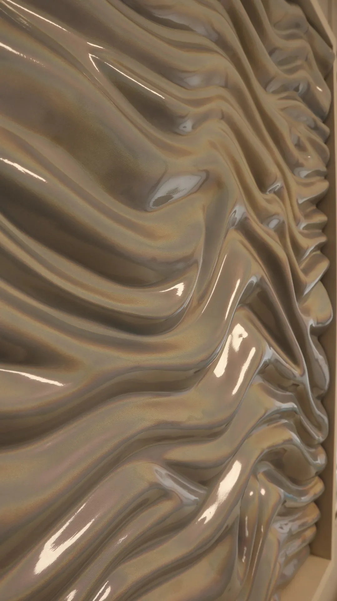

hola belén
Dima Smola, 2026Belén PérezGraphic designer in Orihuela, Spain
Designs brand identities and editorial pieces. Listens before drawing.
Looking for an internship in Alicante or Murcia, spring 2027
Work

Dima Smola
Identity for a sculptor whose surfaces change with the light.
More details
Metropoli
Design trends magazine: masthead, contents page and inside spreads.
More details
Peluquería Mayte
Monogram, stationery and packaging for a neighbourhood hair salon.
More details
Stüssy
Speculative web redesign in two directions: Aero and Grunge.
More details
Wayfinding
Pictograms for classrooms, services and common areas, applied on site.
More details
Cometas
Poster and identity for an exhibition proposal at Las Cigarreras, Alicante.
More details
Info
I am Belén Pérez, a fourth-year Graphic Design student at EASDO in Orihuela, Spain. I work on brand identity and editorial design.
I also tattoo fine line work. It taught me to sketch a lot before drawing, because a line on skin cannot be erased.
- Looking for
- Internship in Alicante or Murcia, 2026/27
- blnn.przinfo@gmail.com
- belnprez
Do you run a studio and need an intern? Write to me.
blnn.przinfo@gmail.com